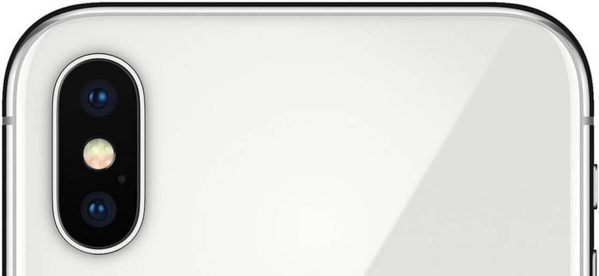
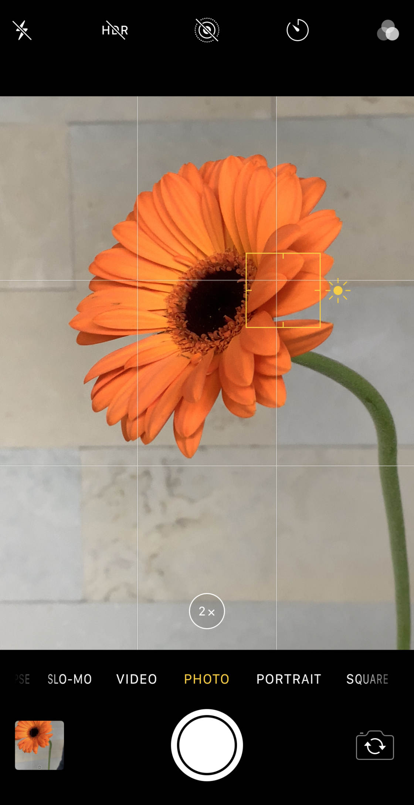
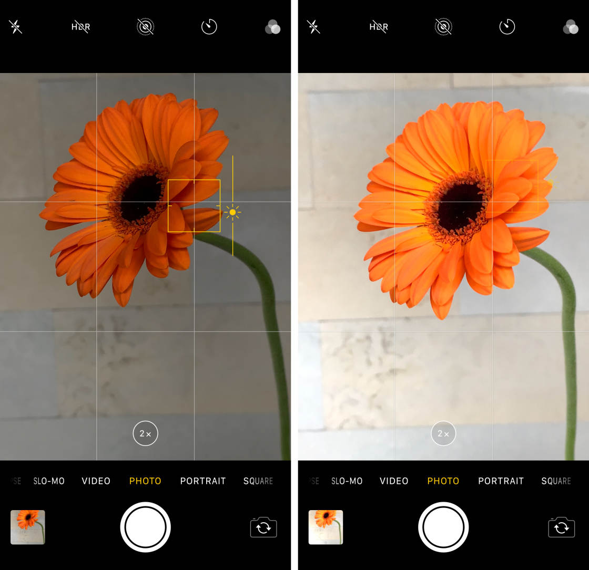

10 Mobile Photography Tips Every Photographer Should Know

Do you want to take stunning photos with your mobile phone? Mobile photography may seem daunting. But with a few simple tricks, you’ll be able to shoot the kind of photos you never thought possible! Read on to discover 12 mobile photography tips that will dramatically improve your photos.
Table Of Contents: Mobile Photography Tips
Click any title link below to go straight to that section of the article:
1. Clean The Lens For Crystal Clear Photos
2. Set The Focus To Ensure Your Subject Is Always Sharp
3. Adjust Exposure For Perfect Brightness Levels
4. Use HDR For Evenly-Lit Photos With Amazing Detail
5. Shoot In Portrait Mode To Create Gorgeous Blurred Backgrounds
6. Activate Burst Mode For Incredible Action Shots
7. Only Zoom In With The iPhone’s Telephoto Lens
8. Keep Your Camera Steady For Sharp, Shake-Free Shots
9. Use The Rule Of Thirds To Compose Beautiful Mobile Photos
10. Use Leading Lines For Powerful Images With Incredible Depth
-
1. Clean The Lens For Crystal Clear Photos

Your mobile phone spends a lot of time in your hands, as well as your purse or pocket. And as a result, the camera’s lens can get covered in dirt, dust, and fingerprints.A dirty lens will leave smudges, blurs, or dust spots on your photos. And that won’t look good. So, for beautifully clear and sharp photos, make sure you clean your phone’s lens regularly.Use a soft cloth (or even your t-shirt) to gently wipe the lens. If you’ve been shooting at the beach or in dusty conditions, blow on the lens first. This will remove any sand or dust that may scratch the lens.Cleaning the lens might seem obvious. But most people don’t remember to do it. So get into the habit of cleaning your phone’s lens. It will make a big difference to the clarity of your photos. -
2. Set The Focus To Ensure Your Subject Is Always SharpEven if your lens is perfectly clean, sometimes your subject just doesn’t look sharp. That’s because the camera’s autofocus doesn’t always focus where you want it to. To ensure your subject is always in sharp focus, you’ll need to set the focus point manually.

Simply compose your shot, then tap on the screen where you want to set focus. (You’d normally want to set focus on your main subject). A yellow box will appear to indicate the focus point.Now, just press the shutter button to take your photo. The area that you set focus on will appear crisp and sharp. Anything in front of or behind the focus point may appear out of focus. Setting the focus is one of the best mobile photography tips you can learn. It’s so simple to set focus. And it will result in beautifully sharp photos that will stun the viewer. -
3. Adjust Exposure For Perfect Brightness LevelsDo your photos often turn out too bright (over-exposed) or too dark (under-exposed)?It doesn’t have to be this way! So, how do you ensure your photos have the perfect level of brightness?

You simply adjust the exposure (brightness) before you take a picture. Adjusting exposure in the iPhone Camera app is easy. Start by tapping to set focus. Then swipe up or down to adjust exposure.Swipe down to make the image darker. Or swipe up to make it brighter. Try to ensure the most important parts of the scene are exposed correctly. When they’re correctly exposed, they’ll have plenty of color and detail.Of course, sometimes you might want to deliberately under or over-expose your photo. For instance, you’ll need to reduce exposure to create a silhouette photo where your subject appears completely black.Or you might want to increase exposure to create a photo with bright, clean whites. As you can see, the iPhone’s exposure feature offers amazing control over the brightness of your photos. However, if you’re photographing a high-contrast scene, it can be difficult to achieve a good exposure. Luckily, the iPhone camera offers a great solution for capturing well-exposed photos of high-contrast scenes. -
4. Use HDR For Evenly-Lit Photos With Amazing Detail